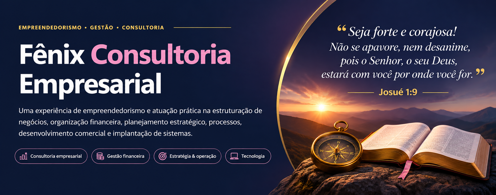

Materiais de construção
Varejo especializado e rotinas comerciais e operacionais.

A Fênix foi estruturada com foco em gestão de processos empresariais, atendimento personalizado e soluções práticas para pequenas e médias empresas. Além do planejamento do negócio, houve prestação efetiva de serviços a empresas de diferentes setores.
Compreender a operação de cada empresa, organizar informações e processos e apoiar decisões de gestão em áreas financeiras, comerciais, administrativas e operacionais.
Atendimento consultivo adaptado à realidade de cada cliente, conectando diagnóstico, planejamento, capacitação de equipes e ferramentas de gestão.
O posicionamento e o modelo de negócio são baseados nos materiais de planejamento da Fênix; a experiência de prestação de serviços foi informada pela responsável pelo projeto.
Explore os nove componentes do modelo de negócio elaborado para a Fênix. Os itens descrevem a estrutura planejada, e não necessariamente práticas implementadas integralmente.
A experiência de consultoria abrangeu negócios com operações, públicos e rotinas distintos. Os segmentos abaixo correspondem a atendimentos efetivamente realizados.
Varejo especializado e rotinas comerciais e operacionais.
Gestão de serviços e organização administrativa.
Operações de alimentação e gestão do negócio.
Gestão de serviços e relacionamento comercial.
Rotinas de prestação de serviços e organização de processos.
Comércio varejista, estoque e operação comercial.
As descrições são contextos gerais dos setores, não afirmações de serviços específicos realizados em cada cliente.
Frentes de serviço relatadas na experiência com a Fênix, organizadas por área de conhecimento.
Organização financeira, fluxo de caixa, estruturação de preços e planejamento financeiro.
Planejamento estratégico financeiro e operacional, captação de clientes, gestão comercial e marketing.
Controle de estoque, organização de rotinas e padronização de processos internos.
Treinamento de equipes e implantação de sistemas de apoio à operação e à gestão.
Fluxo de referência descrito nos documentos metodológicos da Fênix. A aplicação de cada etapa variava conforme o escopo de cada consultoria.
Entrevistas, levantamento de processos, rotinas e ferramentas existentes.
Mapeamento de fluxos e identificação de pontos de atenção e necessidades.
Priorização de ações, definição de escopo e organização de cronogramas.
Aplicação de procedimentos, ferramentas, sistemas e capacitação.
Orientação às equipes, coleta de feedback e ajustes necessários.
O acervo do projeto inclui documentos de planejamento, organização de serviços e apoio ao atendimento consultivo. Os materiais são descritos aqui sem disponibilizar arquivos que possam conter informações confidenciais.
A experiência envolveu estruturar uma proposta de consultoria empresarial e atuar diretamente em serviços de gestão financeira, planejamento, operações, comercial, marketing, treinamento e implantação de sistemas para negócios de diferentes segmentos.
O contato com rotinas financeiras, estoques, precificação e processos empresariais oferece uma base prática para compreender problemas de negócio e formular perguntas que podem ser investigadas com dados, indicadores e ferramentas analíticas.
A Fênix integra minha experiência profissional em gestão e empreendedorismo e ajuda a contextualizar meu interesse atual por soluções orientadas a dados e decisões empresariais.
← Explorar outros projetos do portfólio